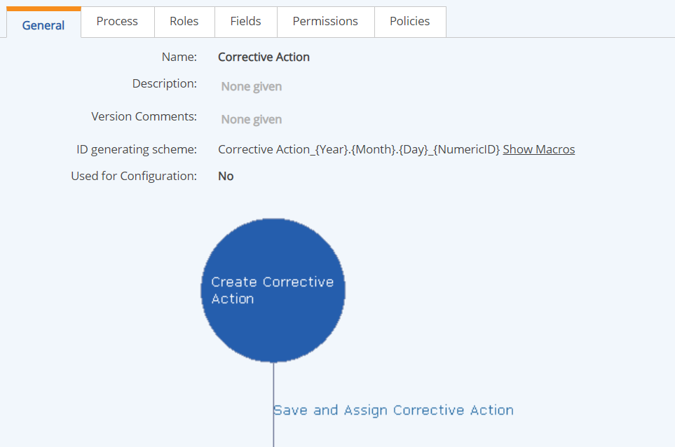
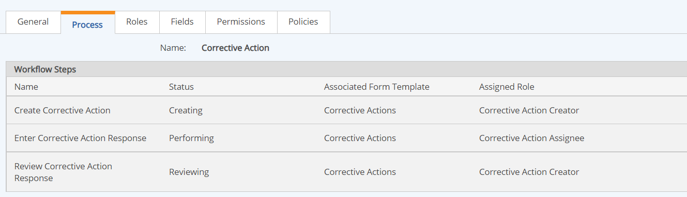
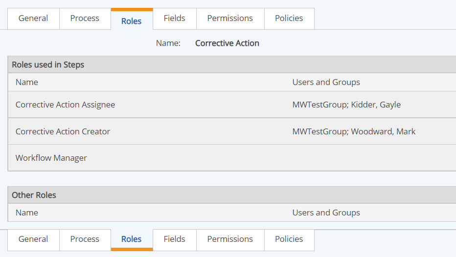
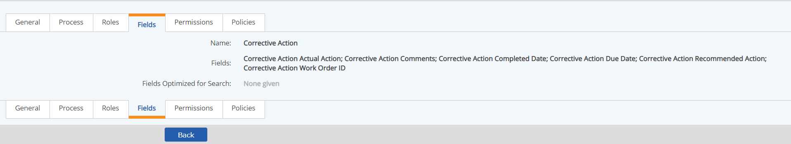
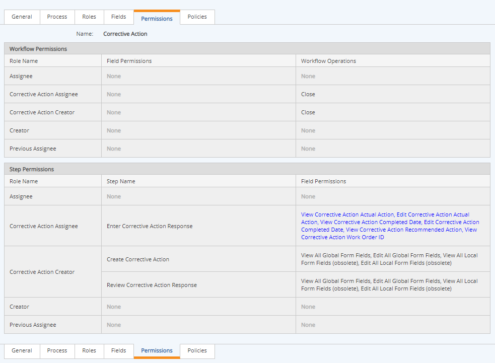
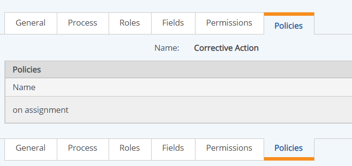

In the Workflow Type Editor you can create new workflow types or edit existing workflow types.
Before creating a new workflow type, you must first create the components that will be needed as you build the workflow. The components include the forms that are used at each step, the roles assigned to each step, the notification policies and the template to be used for these notifications.
The steps to create a workflow type from scratch are as follows:
After the workflow has been built and tested, you can also add these components:
The Workflow Type brings these components together.
To view a workflow type, in the Workflow Types page (Setup > Types under Workflows), right click the workflow and choose View.
The General tab shows a diagram of the workflow process. It also shows the description, version comments and ID generating scheme.

The Process tab lists the steps in the workflow, the status at each step, the associated form template and the assigned role. Select a step in the table to view further details.

The Roles tab shows the users and groups assigned to each role. Pre-configured workflows may need to be edited to associate default users or groups with the roles.

The Fields tab shows the global fields for the workflow. Global fields have a single value for the whole workflow. Fields not designated as global are local fields. Local fields may have separate values at each step.

The Permissions tab shows the permissions that have been granted to each Role. Permissions include the ability to view or edit form fields, as well as perform workflow actions such as closing or re-opening the workflow or associating documents. Permissions must be assigned in any pre-configured workflows before use.

The Policies tab shows the Notification Policies associated with the workflow.
